Carcharodontosaurus
Dị long răng cá mập kỷ Phấn trắng
Tổng quan
Kỷ
Cretaceous
Họ
Carcharodontosauridae
Chi
Carcharodontosaurus
Dài
12 m
Cao
4 m
Nặng
10 tấn
Thức ăn

Carcharodontosaurus là một chi khủng long Carcharodontosauridae ăn thịt sống khoảng 100 đến 93 triệu năm trước, vào cuối tầng Alba tới đầu tầng Cenoman của kỷ Creta.
Nguồn: wikipedia.org
Phân bố
Khu vực Bắc Phi
Thông tin thêm về Carcharodontosaurus
Tên khoa học
Ernst Stromer von Reichenbach đã đặt cho nó cái tên là Carcharodontosaurus - “Thằn lằn răng sắc” hay “Thằn lằn răng cá mập”, theo tiếng Hy Lạp: καρχαρο (karcharo) nghĩa là "sắc nhọn", οδοντο (odonto) nghĩa là "răng", và σαυρος (sauros), nghĩa là "thằn lằn", cái tên này xuất phát từ chi cá mập Carcharodon, ý nói rằng răng của chúng sắc nhọn như loài cá mập đó vậy.
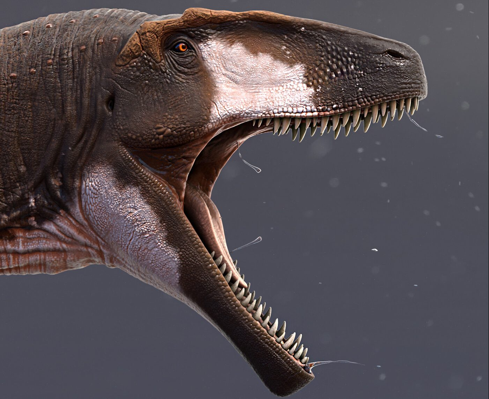Kích thước
Hiện có hai loài được xếp vào chi này, C.saharicus và C.iguidensis, đây là một chi Theropoda lớn, chúng bằng hoặc thậm chí còn lớn hơn cả Tyrannosaurus và Giganotosaurus, nhưng nhỏ hơn Spinosaurus. Theo ước tính cho thấy chiều dài của Carcharodontosaurus vào khoảng từ 12 - 13.5 m, nặng từ 6 - 15 tấn, cao từ 4 - 4.2 m.
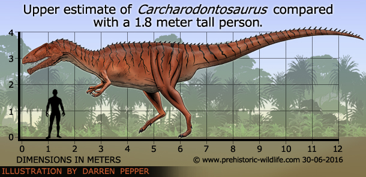Ngoại hình
Carcharodontosaurus có một cái đầu lớn với hơn 60 cái răng sắc nhọn dài 20 cm giống như lưỡi kiếm, các cạnh có răng cưa tương tự như ở loài cá mập trắng lớn.
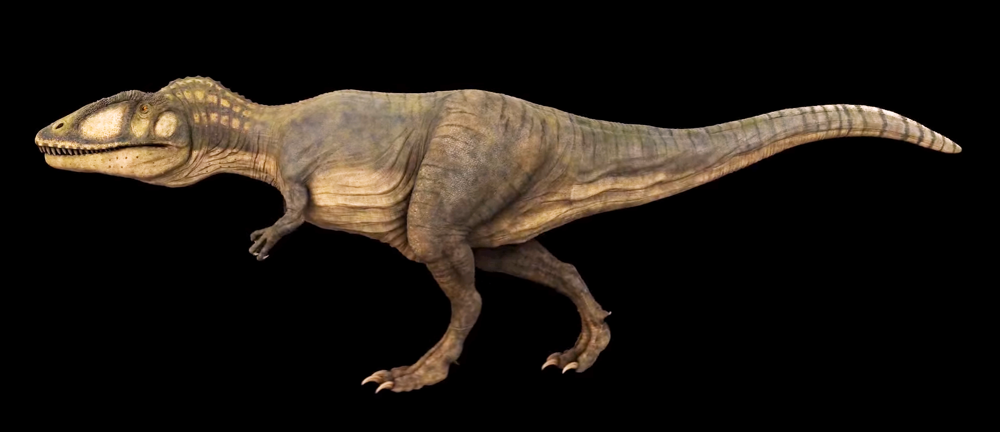Chúng có cấu trúc cơ thể giống với đa số các loài theropods khác khi có các chân sau rất khỏe trong khi chi trước của nó hơi ngắn, nhưng vẫn dài hơn của T. rex và khá mạnh, cùng một cái đuôi dài giúp giữ thăng bằng. Chúng có ba móng trên mỗi ngón tay, có thể được sử dụng để có được một lực kéo mạnh hơn.
Chế độ ăn và săn mồi
Carcharodontosaurus là một động vật ăn thịt, với bộ hàm khổng lồ và hàm răng cưa dài đến 20 cm, hàm răng này được "thiết kế" với mục đích để đâm và xé thịt con mồi, chủ yếu bao gồm những con Paralititan saurepad lớn và một con cự đà có tên là Ouranosaurus. Trong khi đó hai chi trước thậm chí có thể được sử dụng để giết một số con mồi nhỏ hơn của nó, chúng có khả năng nhấc được các con mồi nặng đến 424 kg, dựa trên các tính toán sức mạnh của bộ hàm, khối cơ vùng cổ và trọng tâm của con vật.
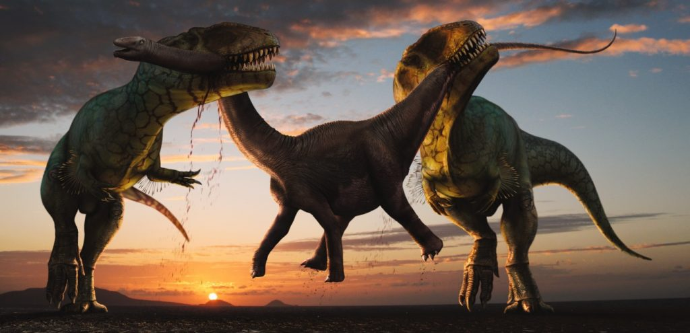Mặc dù là loài khủng long săn mồi đầu bảng trong khu vực nhưng Carcharodontosaurus cũng là một kẻ ăn thịt cơ hội khi sẵn sàng ăn xác chết hoặc cướp con mồi của kẻ khác, ví dụ như Spinosaurus. Tính trung bình, mỗi cá thể Carcharodotonsaurus cần tiêu thụ đến 60 kg thịt mỗi ngày và chúng phải di chuyển trong một khu vực rộng khoảng 500 km vuông để tìm thức ăn.
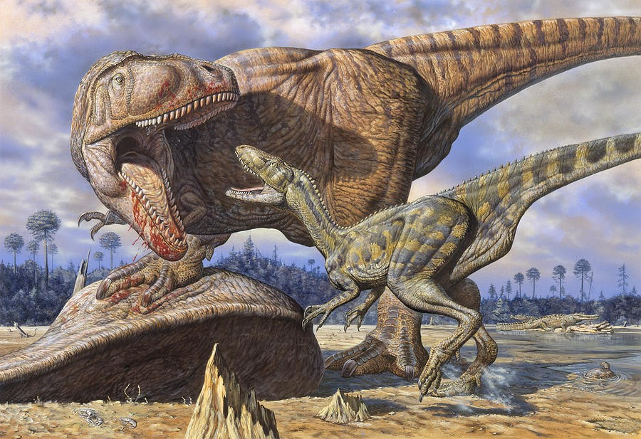Kỷ nguyên
Carcharodontosaurus là một chi Theropoda lớn sống khoảng 100 đến 93 triệu năm trước, vào cuối tầng Alba tới đầu tầng Cenoman của kỷ Creta. Hiện có hai loài được xếp vào chi này, C.saharicus và C.iguidensis.
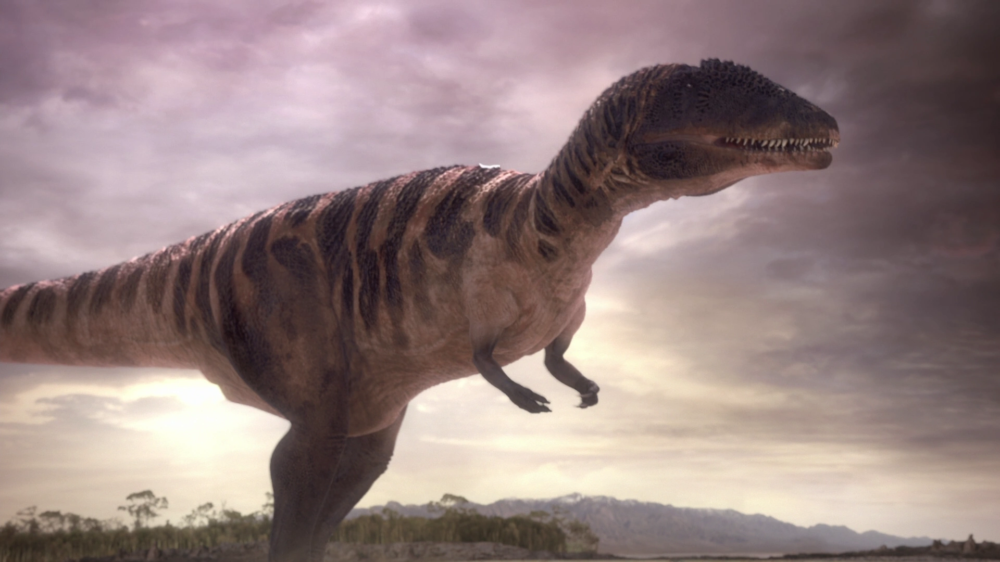Phân bố
Với Spinosaurus chiếm lối sống bán thủy sinh, thì Carcharodontosaurus dễ dàng trở thành loài săn mồi lớn nhất trên cạn, tại khu vực ngày nay là Bắc Phi, bao gồm cả Algeria, Niger, Ai Cập và Ma-rốc. Nơi phát hiện tiêu biểu nhất là Hệ tầng Liên lục địa ở Algeria, Hệ tầng Baharīje ở Ai Cập, Hệ tầng Kem Kem ở Ma-rốc.
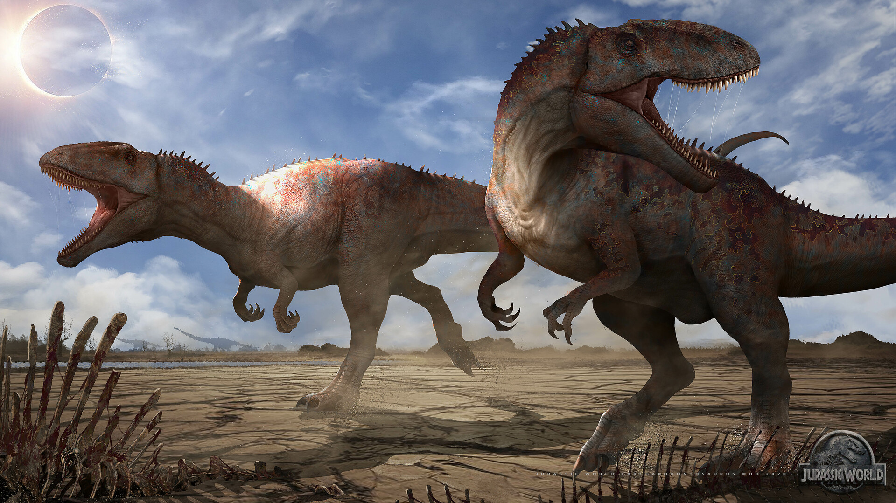Dựa trên việc thu thập các mẫu vật đã chỉ ra Carcharodontosaurus chia sẻ môi trường sống với Spinosaurus, các loài khủng long chân thú lớn khác và cá sấu khổng lồ. Vào giữa kỷ Phấn trắng, Ma-rốc tương đối bằng phẳng, chủ yếu là đồng bằng, đầm lầy và rừng nhiệt đới rậm rạp, tươi tốt, với nhiều hồ và sông hỗ trợ sự đa dạng loài cao.
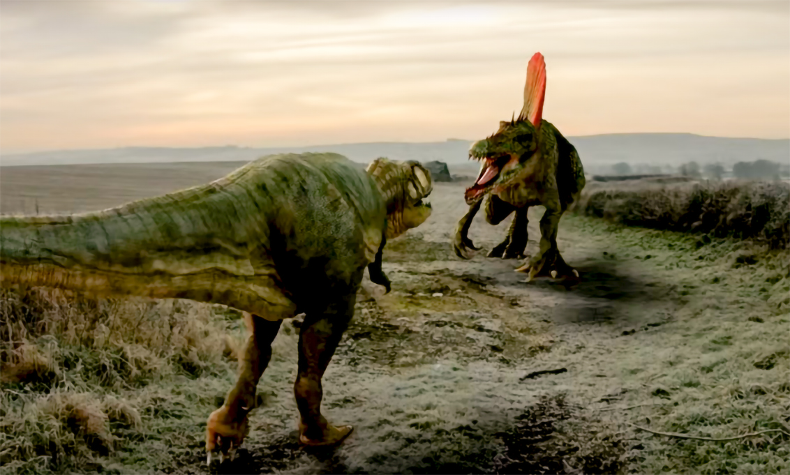Khám phá
Hóa thạch đầu tiên của đại diện loài là Carcharodontosaurus saharicus, bao gồm một hộp sọ, răng, đốt sống và xương khác nhau, đã được Richard Markgraf phát hiện trong Hệ tầng Bahariya, cách Ain Gedid 2 km ở phía tây Ai Cập tại mỏm đá Gebel Harra vào năm 1914.
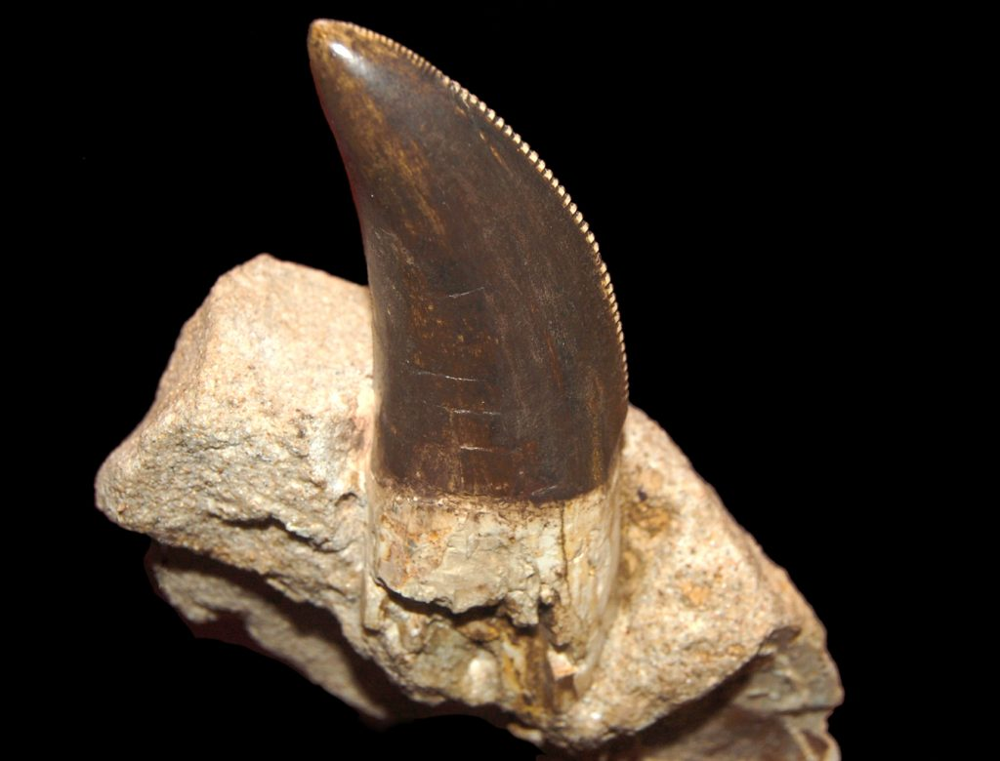Khi Ernst Stromer mô tả chúng vào năm 1931, ông nhận thấy những đặc điểm tương tự trong một vài chiếc răng được tìm thấy tại Algeria vào năm 1924. Sau đó, Charles Depéret và Justin Savornin đã đặt tên cho những chiếc răng hóa đó là Megalosaurus saharicus vào năm 1925. Tuy nhiên, Stromer nhận ra rằng tất cả các hóa thạch được đề cập cho đến nay thuộc về một con khủng long chưa được biết đến mà anh ta đặt tên là Dị long răng cá mập (Carcharodontosaurus), và giữ lại tên gọi trước đó của “saharicus” cho đại diện loài.
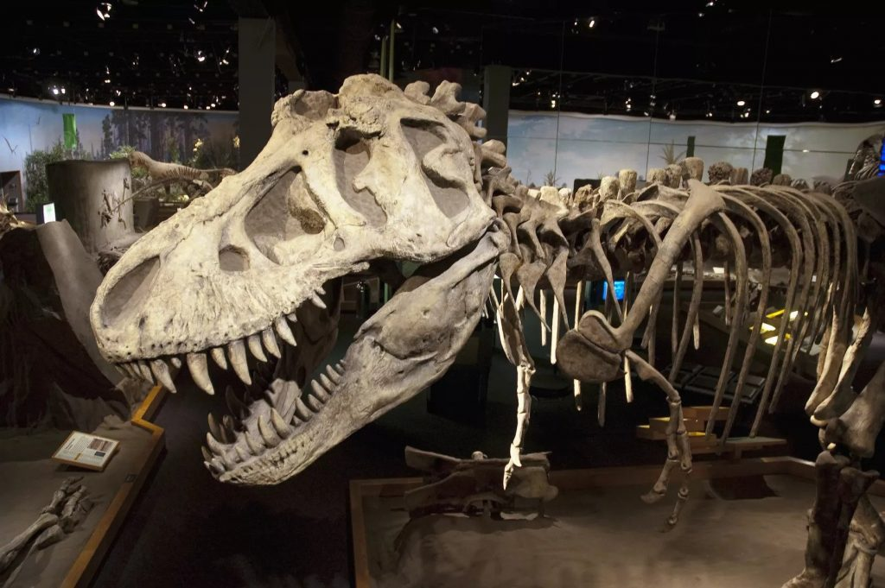Con quỷ tốc độ
Bất chấp kích thước khổng lồ của chúng, Carcharodontosaurus được cho là loài chạy cực nhanh, đạt tốc độ tối đa khoảng 20 dặm một giờ. Cơ sở của những tính toán này thu được bằng cách sử dụng dấu chân hóa thạch từ các thành tạo giữa Kỷ Phấn trắng được tìm thấy gần vị trí của C. saharicus còn lại trùng với kích thước ước tính của nó.
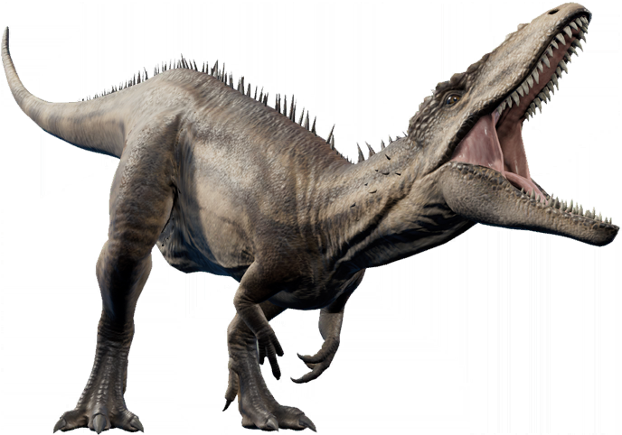Sau khi phân tích chuyên sâu xương của Carcharodontosaurus, các nhà khảo cổ cũng tìm thấy bằng chứng của các túi khí trong bộ xương hóa thạch của Carcharodontosaurus, những túi khí này tương tự như của các loài chim hiện đại và cung cấp một luồng oxy liên tục vào phổi, tăng độ bão hòa oxy là một kỹ thuật thở cực kỳ hiệu quả giúp Carcharodontosaurus chạy nhanh hơn và kéo dài thời gian hơn khi truy đuổi con mồi.
Sự tuyệt chủng
Vào giai đoạn Cenomania, mực nước biển dâng lên khiến siêu lục địa Gondwana bị phân tách thành nhiều phần, chia cắt các quần thể khủng long, trong đó có các quần thể Carcharodontosaurus bị chia cắt, dẫn đến việc hình thành hai loài riêng biệt, trong đó C. saharicus ở phía Bắc và C. iguidensis ở phía Nam. Đây cũng là lý do tại sao các họ hàng gần của chi Carcharodontosaurus chẳng hạn như Giganotosaurus cũng có ngoại hình tương tự khi phần lục địa Nam Mỹ bị tách khỏi Gondwana. Hiện tượng này được gọi là sự hình thành loài khác vùng (allopatric speciation).
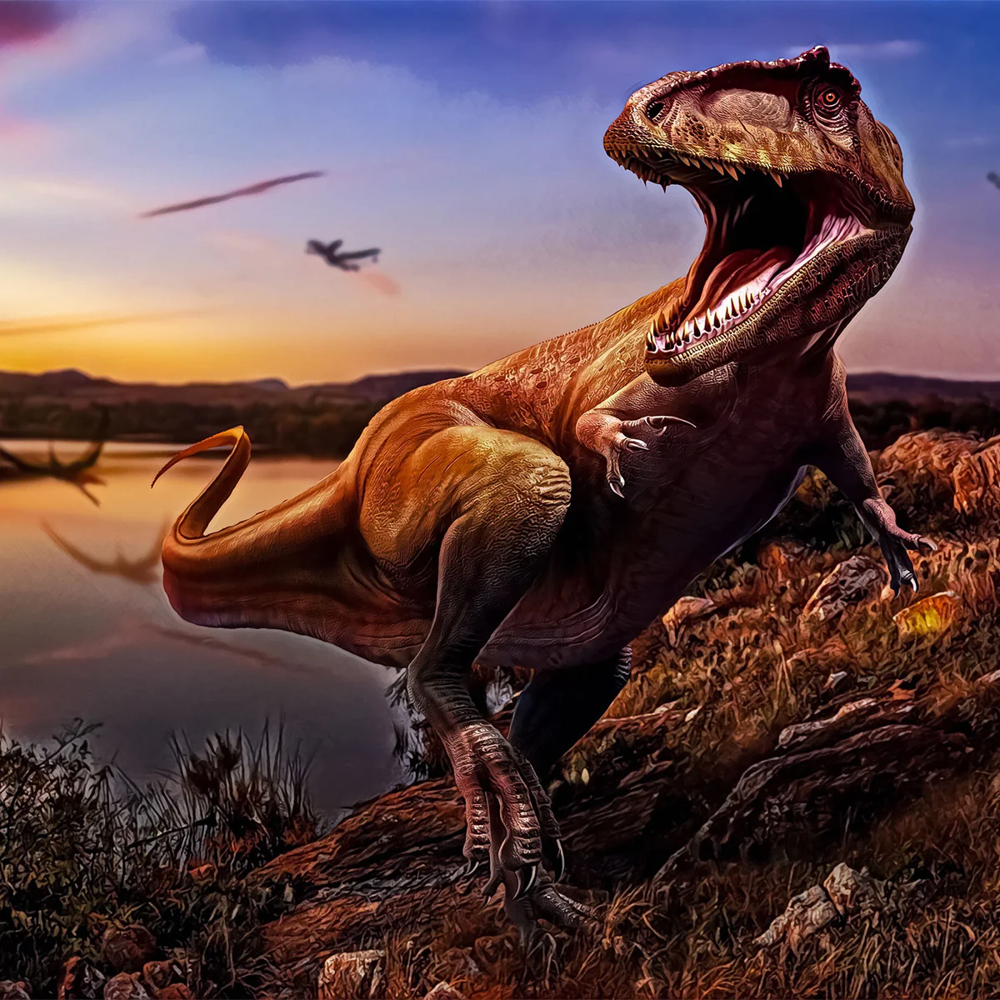Hiện tượng nước biển dâng lên đã phá hủy phần lớn các đầm lầy ven biển và vùng đồng bằng ngập nước xanh tươi của Bắc Phi, cho thấy một sự kiện thay thế toàn cầu. Kéo theo sự hủy diệt của toàn bộ hệ sinh thái trong khu vực và sự tuyệt chủng của các loài sinh vật đứng đầu chuỗi thức ăn như Carcharodontosaurus và Spinosaurus là điều không tránh khỏi.